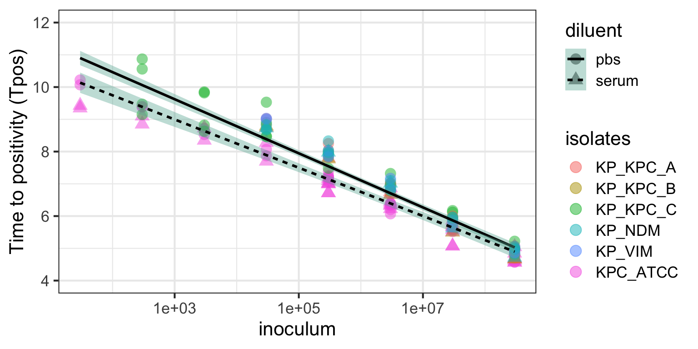

PI: Irene Zaghi, M.D.
Supervisors: Prof Russell Lewis, Prof Vittrio Sambri, Prof.ssa Monica Cricca
The ACUTE project (Adapting Bloodculture systems to monitor antimicrobial efficacy) proposes to develop time-to positivity (Tpos)- a commonly measured variable in continuously monitored bloodculture systems in use by most clinical microbiology laboratories- as surrogate pharmacodynamic biomarker for monitoring antibiotic therapy.
In this project, we propose to develop this assay as a “proof of concept” for monitoring ceftazidime-avibactam therapy of KPC-carbapenemase producing Klebsiella pneumoniae. (KPC-Kp) This will be accomplished through two specific aims and several workpackages.
- The first specific aim will establish the quantitative relationships between Tpos and several representative KPC-Kp strains in the absence and after exposure to a range of clinically-relevant exposures of ceftazidime-avibactam.
- The second specific aim will measure in 20 critically-ill patients receiving ceftazidime-avibactam treatment for KPC-KP bloodstream infections using KPC-Kp “indicator” strains or the patient’s own isolate, and correlate Tpos results with blood concentration-time courses of ceftazidime and avibactam and PK/PD target attainment (free drug T>MIC ) simulated for each patient using Bayesian estimates of individual PK parameters from population pharmacokinetic models and LC/MS/MS analysis of ceftazidime-avibactam in serum.
This study will form the basis for the broader development and validation of Tpos as a surrogate pharmacodynamic biomarker for antimicrobial activity in serum, that could potentially be used for screening or monitoring antimicrobial efficacy in the critically-ill patients.
Workpackage 1
IN the first workpackage, we will establish a quantitative relationship in vitro between Tpos and the number of viable K. pneumoniae alone, or following exposure to clinically-relevant sub-therapeutic and therapeutic exposures to ceftazidime-avibactam and other antibiotics. This will be acheived through 3 specific aims:
- In Aim 1A we will establish the quantitative relationship in vitro between Tpos and the number of viable KPC-Kp.
Tubes containing 1.8 mL of pooled healthy human serum will be inoculated with 0.2 mL of a series of seven ten-fold dilutions (5x101 to 5x107 CFU/mL) of the standardised inoculum of each test indicator strains listed in Table 1. The inoculated sera are then transferred into BacT⁄ALERT bottles without inactivating matrix (Biomérieux Inc) for aerobic incubation and monitored for time to positivity. Tpos results will be used to establish preliminary assay quality control ranges and confirm the utility of isolates as selected “indicator” organisms and quality control ranges at specific inoculum thresholds. Experiments will be performed in at least 10 replicates. The main goal of this workpackage is to demonstrate that Tpos results under the assay conditions exhibit a reproducible and reliable relationship with bacterial inoculum for representative KPC-carbapenemase producing strains of Klebsiella pneumoniae.
This link can be followed to find detailed Standard Operating Procedures for the experiments.
Figure 1. Relationship of K. pneumoniae inoculum vs. Tpos
Figure 2. Relationship between Tpos and ceftazidime concentrations
Figure 3. Relationship of ceftazidime-avibactam concentrations vs. time to positivity for KP_KPC_B
Call: drda(formula = tpos ~ conc, data = wp2, mean_function = "logistic4",
max_iter = 1000)
Pearson Residuals:
Min 1Q Median 3Q Max
-1.40020 -0.63581 0.00006 0.24329 2.54945
Parameters:
Estimate Std. Error Lower .95 Upper .95
Minimum 8.9594 0.15665 8.652 9.266
Height 15.0587 0.30239 14.466 15.651
Growth rate 3.6462 1.36438 0.972 6.320
Midpoint at 2.1573 0.05969 2.040 2.274
Residual std err. 0.5187 0.07487 0.372 0.665
Residual standard error on 26 degrees of freedom
Log-likelihood: -20.729
AIC: 51.457
BIC: 58.463
Optimization algorithm converged in 336 iterations[1] -3.226789